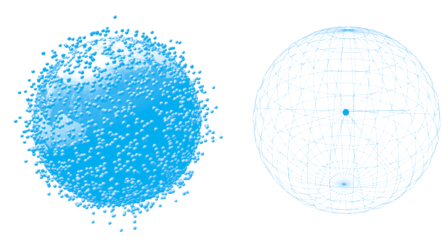

ACCUMULATE, AGGREGATE, DESTROY: Database Fever and the Archival Web,
from LOST AND LIVING (IN) ARCHIVES
by Katrina Sluis
Digitization, it is commonly argued, has liberated our documents from the material limitations of physical media, producing a ‘storage mania’ in which it is easier to accumulate data than delete. The rhetoric of cloud computing has further emphasized the passive accumulation and ‘dematerialization’ of data, by promising to unshackle our documents from the limits of space and time in favour of universal accessibility. However, it would be a mistake to describe the expansion of networked storage, as simply a shift from ‘material archive-systems’ to ‘immaterial information-banks’, as argued by media theorists Joke Brouwer and Arjen Mulder (Brouwer and Mulder 2003, 4). In their work on archives, sociologists Richard Harvey Brown and Beth Davis-Brown state that activities such as acquisition, classification and preservation are ‘technical’ activities associated with the archive that may become explicitly ‘political’ as they determine visibility and access (Brown and Davis-Brown 1998, 18). Far from representing the dematerialisation of the object and the liberation from the archival gaze, digitization presents us with material structures, which raise new questions concerning how social and cultural memory is exploited and ‘read’ by both human and nonhuman actors. As Derrida’s archive fever is supplanted by database fever, technologies of memory are increasingly linked to the industrial processing of information and the performativity of software.
Framing these shifts has been an ongoing consideration of how the archive might be understood in an age of ubiquitous networked media. In the early noughties, the rhetoric of Web 2.0 celebrated the possibility of shared media, which is both mobile and instant, hosted on storage that is limitless and ‘free’, requiring little technical mastery to publish and share. With the ability to organize content through user-generated tagging systems, the democratic promise of social media appeared to extend the web’s potential to overcome hierarchies of knowledge. Platforms such as YouTube, Facebook and Flickr emerged not as ‘guardians’ of digital preservation, but social interfaces which offered opportunities to archive one’s life. By simplifying online publishing, these companies persuaded users to abandon their home pages and migrate to their services with promises of greater storage capacity and convenience, at zero or low cost. However, the economic and technical delivery of this new ‘free’, ‘social’ and ‘archival’ web to millions of concurrent users is far from transparent, and offers new possibilities for the observation and administration of such data. It is clear, then, that when considering the digital archives that characterize web culture today, it is no longer in the context of the ephemeral or ‘virtual limitlessness of cyberspace’, but rather the contingent and specific economies of the server farm or database schema.
Database Fever
The relational database was first proposed by computer scientist Edgar F. Codd in 1970, and has since become a central, yet largely invisible technology of memory, a container for the blobs of information called videos, documents and snapshots.
Databases have colonized the back-end of the web: they are the skeletons of search engines; they lie behind social platforms like Facebook, Twitter, YouTube and Wordpress. However, it may not be immediately obvious that the pages that make up the web are increasingly being generated automatically from an underlying database. In the 1990s, establishing a web presence required an FTP program, a few HTML tags and a folder on a web server to store your ‘home.html’. In a post-Web 2.0 environment, authoring has been reconfigured as a process of adding items to the [YouTube/Wordpress] database. The rhetoric of Web 2.0 frames this as a ‘liberatory shift’ in thinking about the web not so much as a set of hyperlinked documents but as a rich interactive platform in which ‘SQL is the new HTML’.1 Observing this ‘database turn’ in relation to YouTube, media theorist Geert Lovink observes: ‘We don’t watch TV any more, we watch databases’ (Lovink 2008, 9).
1
SQL, or Structured Query Language is a language used to create, maintain and query relational databases. For more information see O’Reilly 2005.
A significant consequence of the database-driven web is its dependence on highly efficient and scalable computing platforms—Facebook’s infrastructure alone must serve up to 600,000 images per second. The enterprise data centre or ‘server farm’ has emerged as the contemporary arkheion of Derrida’s Mal d’Archive: a facility for housing tens of thousands of concatenated servers.
2 With each site the size of a football pitch and costing anywhere up to $2 billion, these vast air-conditioned bunkers must be strategically located near cheap, abundant electricity; their location is often shrouded with secrecy and access is highly restricted (Markoff and Hansell 2006). And as the paradigm of ‘cloud computing’ increasingly defines the archival web, these information warehouses are being re-branded as liberating ‘clouds’ in which users can relocate their data archives to the Google grid for ubiquitous access.

2
For more information see, for example, Hogen 2015 who discusses the impact and emplacement of data centres, and Dourish 2014 on the materialities of database technologies.
When the collection and distribution of media becomes the collection and distribution of data, our photographs, videos and texts become subject to the economics of information production and knowledge management. The database and its attendant technologies (SQL/XML) is also a product of what humanities scholar Alan Liu describes as ‘the new discourse paradigm’ which values ‘the ability to say anything to anyone quickly’ (Liu 2008, 211).3 Liu’s work is significant in identifying the ways in which the development of such standards is informed by the need to make communication as post-industrially efficient as possible to allow knowledge to move seamlessly from print, to web or mobile devices. As Liu observes, the demand that discourse becomes transformable, autonomously mobile and automated is necessary so that ‘a proliferating population of machinic servers, databases, and client programs can participate as cyborgian agents and concatenated Web servers facilitating the processing and reprocessing of knowledge’ (Liu 2008, 216).
3
XML is a set of rules for encoding documents elec-tronically and provides a standard through which disparate data sources (especially from data-bases) can be structured and read Liu 2008, 211.
Another consequence of standards such as XML is the separation of data from its presentation, which contributes to the mobility of contemporary media and its modularity. Digital media can be processed and circulated increasingly without human intervention; images and texts can be rapidly decontextualized and recontextualized onto different software and hardware. The GPS in your camera will encode each snapshot with the place of capture, your calendar will sync up and confirm the context of your location, a face recognition algorithm will identify and tag the people in the frame before uploading it to Flickr. From there it might be instantly syndicated into the sidebars of blogs or broadcast via RSS to the wireless photo frame sitting on your mother’s mantelpiece seconds after capture.
With the post-industrial processing of social media, today’s web is not only more ‘real time’ but also more enclosed, searchable and trackable. While there is concern over the control and long-term preservation of this user-generated multimedia archive—broken links, lost webpages, unsearchable content—there is also an increasing sense, that ‘the Internet never forgets’ (Turkle 2011, 260). The ubiquity of digital storage now means it requires more energy to delete rather than save—Google has removed the button to ‘delete’ mail in its mobile Gmail app in favour of an ‘archive’ button. However, the difference now is that data is not just archived: it is automatically (and opaquely) analyzed and shared
The Archive as Commodity
Whilst database-driven websites are certainly not new, they have emerged as a critical component to the financial success of contemporary social media. In his 2004 article outlining the Web 2.0 paradigm, entrepreneur Tim O’Reilly observed that ‘control over the database has led to market control and outsized financial returns’ (O’Reilly 2005, 3). O’Reilly emphasizes this in his following advice to web developers:
It’s no longer enough to know how to build a data base-backed web site. If you want to succeed, you need to know how to mine the data that users are adding, both explicitly and as a side-effect of their activity on your site (O’Reilly 2007).
With greater centralization comes the need for greater computational power and an economic strategy to sustain it. The business model that has emerged and become fetishized by Silicon Valley relies on the extraction of value from ever greater volumes of data. By evaluating the comments, click-throughs, tags, and other content in their databases, companies such as Yahoo, Facebook and Google are able to develop the intelligence of their algorithms and generate wealth from highly targeted advertising. Next to the impact of archives on collective memory and human identity, participation in the digital archive generates another kind of unintentional memory, a ‘data shadow’, which is collected in exchange for free access to these platforms.4 The data mining of our digital selves not only contributes to the commodification of digital memory, but forms part of an economy of association in which transversing the database is mediated by recommender systems which lead us towards certain content above others.
4
A data shadow is a slang term that refers to the small traces of information that some-one leaves behind when working on a computer.
Typically, the ontologies of these algorithms are withdrawn from discursive access in the interests of protecting a company’s intellectual property. For example, in 2007 Yahoo filed a patent for ‘interestingness’, an algorithm that Flickr uses to evaluate the quality of photographs to draw attention towards exceptional images from its database. Here commenting, favouriting and tagging along with some ‘secret sauce’ contribute to the weighting of each image.5 Like Google’s PageRank algorithm, its exact nature is kept secret to prevent users from ‘gaming’ the system to rank higher in search results. Whilst the algorithm remains hidden, the user is not afforded the same treatment. The authentication of real names and identities is now enforced across platforms before a user can be trusted to share their life, their tastes, and preferences. Because the archival web relies on user information being captured, saved and sold to marketers, or mined for statistical info, the user must be rendered visible and transparent. Paradoxically, even as the user is encouraged to upload, annotate, update and maintain their online profile to achieve visibility in these systems, the actual value or visibility of the individual tweet, photo or snap is diminished.
5
See, Butterfield 2005 and Yahoo Patent Application for ‘interestingness ranking of media objects’, http:// appft1.uspto.gov/net acgi/nph-Parser?Sect 1=PTO1&Sect2=HITOFF& d=PG01&p=1&u=%2Fneta html%2FPTO%2Fsrchnum. html&r=1&f=G&l=50&s1= %2220060242139%22.PG NR.&OS=DN/20060242139 &RS=DN/20060242139.
Accessed September 2016.
An interesting example of the financial shift that has commodified these new archives even further is a recent deal Pinterest made with Getty Images. In 2013, both parties agreed that Pinterest would pay Getty Images a fee for their images in return for their image metadata. As the second-biggest referrer of traffic on the internet after Facebook, Pinterest’s choice makes sense from a commercial point of view; the extended metadata will boost their traffic, and hence advertising income. Getty Images on the other hand has little to gain from this traffic, but say they want to share the fee with the copyright holders of their image contributors.
6 Not only is this an interesting turn into licensing, but more importantly it signals the shift from an interest in content (images, videos, audio) to metadata. This shift is further emphasized by Getty Images’ decision to make 30 million of their images available for ‘free’—as long as users embed them using Getty’s custom player. This ensures the automated crediting of the images and, more importantly, it provides accurate data about how people are using their images; enhancing the company’s ability to track consumer behaviour and react quickly to trends.
7
6
For more information see, http://press. gettyimages.com/getty-images-partners-with-pinterest/. Accessed September 2016.
7
For more information see, Cookson 2014.
The Algorithm, Computer Vision and Memory
The problem with [Facebook’s Graph search] is that aggregation says more about us than we consciously know we are making available. Tracking at all these levels demonstrates the extent to which the social network itself generates a parallel archive of movement recording the interactions of the networked itself, as a simultaneous—but exponentially bigger— living archive. This parallel archive may come to make correlations about ourselves about which we are not yet aware (Hogan 2015, 10).
As the archive expands beyond the limits of human attention, the way in which users annotate and share mnemonic media is a significant problem. Algorithms are being employed for tasks as varied as facial recognition in photo collections, aesthetic evaluation of snapshots, automated photo enhancement and the automated creation of digital family albums. Despite their goal to build intelligent machines for the management of images, the field of informatics has not yet developed a perfectly accurate algorithmic means for approximating human vision. The development of computer vision is currently mitigated by a ‘semantic gap’ caused by the lack of similarity in the way in which humans and machines interpret these binary blobs of data. As a result, popular search engines have historically relied on the ability of their software spiders to harvest contextual text (metadata) rather than content to index images and videos.
While user-generated tagging systems promise to bring some human order to material online, they cannot keep up with the expansion of the archive. As a result, the paradigm of ‘browsing’ or ‘surfing’ hyperlinks is slowly being replaced by the search box which retrieves information from the archive. Faith in the search algorithm persists as a means through which knowledge can be ‘PageRanked’, democratized and shared.
8 In her work on mediated memories, media theorist José van Dijck suggests that ‘the networked computer is a performative agent in the act of remembering’ in which the navigation of personal memory ‘not only highlights the processes of remembering but also allows the user to make connections that would never have been discovered without the computer’ (Van Dijck 2007, 166–67). As the archive is reconfigured as a database with a search field, it is significant to consider the way in which the search algorithm moderates these connections. For the archive, this shift means that there is a permanent emphasis on transfer, rather than storage (Ernst 2013, 202), in which memory is ‘collectively (re)constructed (and recontextualized) in the present rather than collected and preserved from the past’ (Hogan, 2015, 10).
8
See, for example, the ‘Memories for Life’ project, a Grand Challenge of Computing, www. memoriesforlife.org/. Accessed September 2016.
New Practices: the Anti-Archive and the Erasable Web
Against this backdrop, apps such as Snapchat are at the vanguard of what is being called ‘the erasable web’—a new attitude emerging from Silicon Valley that self-consciously rejects the public aggregation of personal media in favour of ephemerality, erasure and immediacy. The problem, as Snapchat’s CEO Evan Spiegel describes it, is that ‘technology companies view movies, music, and television as INFORMATION. Directors, producers, musicians, and actors view them as feelings, as expression. Not to be searched, sorted, and viewed—but EXPERIENCED’ (Spiegel 2014).
For Spiegel, Snapchat offers a radical break with the archival paradigm of Web 2.0: since each message self-destructs on viewing, it cannot be instrumentalized as mere data—it can only be experienced. Additionally, because each video, image or text has a limited life-span on Snapchat, it intensifies the moment of viewing and its affective potential. The knowledge that an image disappears mimics real life: moments come and go, like memories, or like a ghost (Snapchat’s icon). And imperfection rather than perfection can be embraced.
Or, Spiegel argues:
Traditional social media required that we live experiences in the offline world, record those experiences, and then post them online to recreate the experience and talk about it. … This traditional social media view of identity is actually quite radical: you are the sum of your published experience. Otherwise known as: pics or it didn’t happen. Or in the case of Instagram: beautiful pics or it didn’t happen AND you’re not cool.
This notion of a profile made a lot of sense in the binary experience of online and offline. It was designed to recreate who I am online so that people could interact with me even if I wasn’t logged on at that particular moment (Spiegel 2014).
With the relentless aggregation of images, videos and texts, which are publically shared and mined as your ‘profile’ there is an increasing desire to escape the archive. Snapchat offers the illusion of self-destruction, and represents a shift away from archiving yourself in real time to expressing yourself in real time. For Spiegel, the authenticity of the disappearing snap sits in direct contrast with the polished and contrived Instagram feed. Without an archive or profile to maintain, the user of Snapchat is (allegedly) free to be their ‘authentic’ self. As sociologist Nathan Jurgenson suggests, Snapchat’s photos are
not made to be collected or archived, they are elusive, resisting other museal gestures of systemization and taxonomization, the modern impulse to classify life according to rubrics. By leaving the present where you found it, temporary photographs feel more like life and less like its collection (Jurgenson 2013).
This does not diminish the value of memory, as Jurgenson argues, rather Snapchat ‘inspires memory because it welcomes the possibility of forgetting’. Ten seconds or less, sharpens the focus on the message—in parallel, many live performers reject the possibility of any kind of documentation.
9
In the age of surveillance and data mining, Snapchat and its peers are heralded as being about ‘taking control of your digital self’ (Gillette 2013). Snapchat has built its audience and business by exploiting a desire for the anti-archival, the ephemeral. However, there is little to no economic model to support the anti-archival web in the server farm age. Initially, Snapchat was able to grow because of its low server load, but the emergence of new features such as ‘memories’ to archive the once ephemeral content, reflect a retreat into the older archival forms of social media more amenable to marketing and tracking. While there is a strong urge for ‘forgetting’ (Mayer-Schönberger 2009) and ‘whitewalling’ (boyd 2014), for now, economics rules over authenticity and ephemerality.
-
-
-
-
-
9
The discourse around documentation of live performances is strong; one of the main contesters of any form of documen-tation is Phelan 1993.
Remember to Forget Everything
Information scientist, Geoffrey Bowker suggests we live in an ‘epoch of potential memory’ in which ‘narrative remembering is typically a post hoc reconstruction from an ordered, classified set of facts which have been scattered over multiple physical data collections’ (Bowker 2005, 30). As narrative remembering becomes constituted through the performance of software it becomes linked to the discourse of informatics and knowledge management. The relational database has become a convenient site from which information can be stored, analysed and transmitted, feeding off the data it accumulates in order to develop new categories, relationships and knowledge. As the archive is re-invented as the ‘cloud’, it is important to consider ‘digital memories’ as not just vaporous, immaterial, streams of data—but as data which is embedded in the material structures of hardware and software.
In the process of outsourcing the function of ‘seeing’ and ‘recalling’ to machines, there emerges a desire for memory which is both automated and passive. The modularity and flexibility of media creates the possibility of an ‘algorithmic memory’: an increasingly intelligent self-organizing extensible memory which can circulate independently of human intervention. The reliance on algorithms to process images and retrieve texts also presents a shift in focus from storage to retrieval in mnemonic labour.
This article is a revised and extended version of Sluis 2010.

Bibliography
Bowker, Geoffrey C. Memory Practices in the Sciences. Cambridge, MA: The MIT Press, 2005.
boyd, Dana. It’s Complicated: The Social Lives of Networked Teens. New Haven, CT: Yale University Press, 2014.
Brouwer, Joke, and Arjen Mulder. ‘Information is Alive.’ In Information is Alive: Art and Theory on Archiving and Retrieving Data, edited by Joke Brouwer and Arjen Mulder, 4–6. Rotterdam: V2_/NAi Publishers, 2003.
Brown, Richard H., and Beth Davis-Brown. ‘The Making of Memory: The Politics of Archives, Libraries and Museums in the Construction of National Consciousness.’ History of the Human Sciences 11, no. 4 (1998): 17–32.
Butterfield, Stewart. ‘The New New Things.’ Flickr Blog, 1 August 2005, http://blog.flickr.net/en/2005/08/01/the-new-new-things/. Accessed September 2016.
Codd, Edgar F. ‘A Relational Model of Data for Large Shared Data Banks.’ Communications of the ACM 13, no. 6 (1970): 377–87.
Cookson, Robert. ‘Why Getty Images is Giving Away 30m Photos for Free.’ Financial Times, 6 March 2014, www.ft.com/content/44ac0a6d-ec0e-3ecc-965c-349d4f0a0c49. Accessed September 2016.
Dourish, Paul. ‘No SQL: The Shifting Materialities of Database Technology.’ Computational Culture: A Journal of Software Studies 4 (2014), http://computationalculture.net/article/no-sql-the-shifting-materialities-of-database-technology. Accessed September 2016.
Ernst, Wolfgang. Digital Memory and the Archive, edited and with an introduction by Jussi Parikka. Minneapolis, MN: University of Minnesota Press, 2013.
Gillette, Felix. ‘Snapchat and the Erasable Future of Social Media.’ Bloomberg, 8 February 2013, www.bloomberg.com/news/ articles/2013-02-07/snapchat-and-the-erasable-future-of-social-media. Accessed September 2016.
Hogan, Mél. ‘Facebook Data Storage Centers as the Archive’s Underbelly.’ Television & New Media 16, no. 1 (2015): 3–18.
— ‘Data Flows and Water Woes: The Utah Data Center.’ Big Data & Society 2, no. 2 (July 2015). http://bds.sagepub.com/ content/2/2/2053951715592429.full.pdf+html. Accessed September 2016.
Jurgenson, Nathan. ‘Pics and It Didn’t Happen.’ The New Inquiry, 7 February 2013. http://thenewinquiry.com/essays/pics-and-it-didnt-happen/. Accessed September 2016.
Liu, Alan. Local Transcendence: Essays on Postmodern Historicism and the Database. Chicago, IL: University Of Chicago Press, 2008.
Lovink, Geert. ‘The Art of Watching Databases: Introduction to the Video Vortex Reader.’ In Video Vortex Reader: Responses to YouTube, edited by Geert Lovink and Sabine Niederer, 9–12. Amsterdam: Institute of Network Cultures, 2008.
Markoff, John, and Saul Hansell. ‘Hiding in Plain Sight, Google Seeks More Power.’ The New York Times, 14 June 2006, www.nytimes. com/2006/06/14/technology/14search.html?pagewanted=1&_ r=1. Accessed September 2016.
Mayer-Schönberger, Viktor. Delete: The Virtue of Forgetting in the Digital Age. Princeton, NJ: Princeton University Press, 2009.
O’Reilly, Tim. ‘What is Web 2.0? Design Patterns and Business Models for the Next Generation of Software.’ O’Reilly Network, 30 September 2005, www.oreilly.com/pub/a/web2/archive/what-is-web-20. html?page=all. Accessed September 2016.
— ‘Programming Collective Intelligence.’ O’Reilly Radar Blog, 15 August 2007, http://radar.oreilly.com/2007/08/programming-collective-intelli.html. Accessed September 2016.
Phelan, Peggy. Unmarked: The Politics of Performance. New York and London: Routledge, 1993.
Sluis, Katrina. ‘Algorithmic Memory? Machinic Vision and Database Culture.’ In New Media and the Politics of Online Communities, edited by Aris Mousoutzanis and Daniel Riha, 227–35. Oxford: Inter- Disciplinary Press, 2010.
Spiegel, Evan. ‘Keynote.’ 2014 AXS Partner Summit, 25 January 2014, www.snap.com/news/post/74745418745/2014-axs-partner-summit-keynote/. Accessed September 2016.
Turkle, Sherry. Alone Together: Why We Expect More from Technology and Less from Each Other. New York, NJ: Basic Books, 2011.
Van Dijck, José. Mediated Memories in the Digital Age. Stanford, CA: Stanford University, 2007.